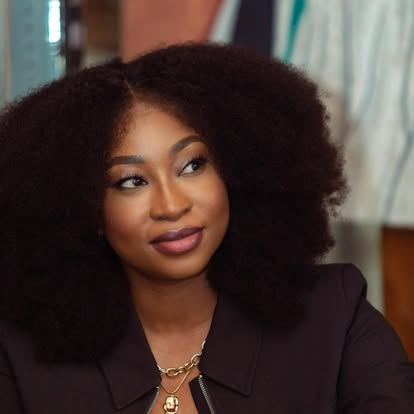
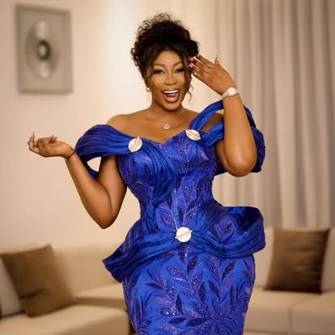
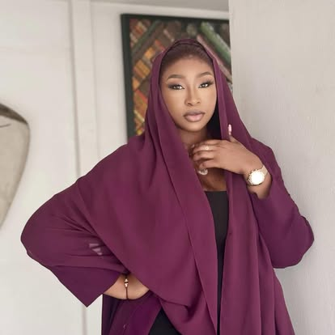
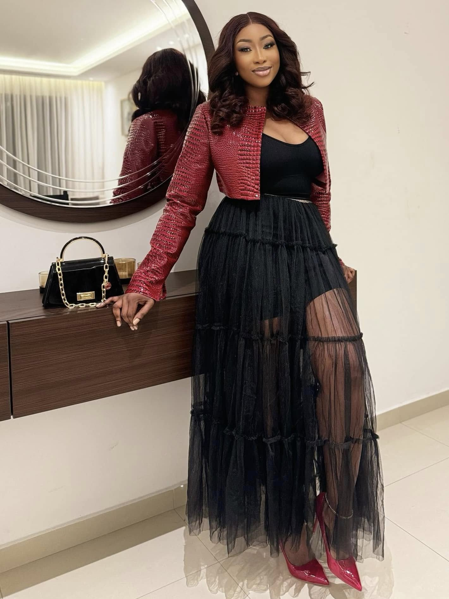
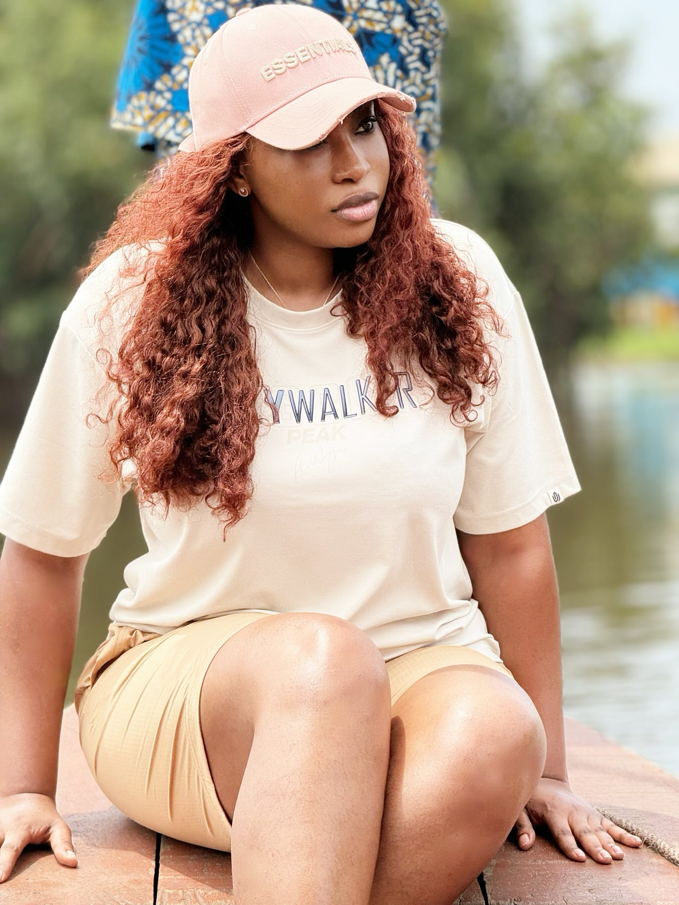
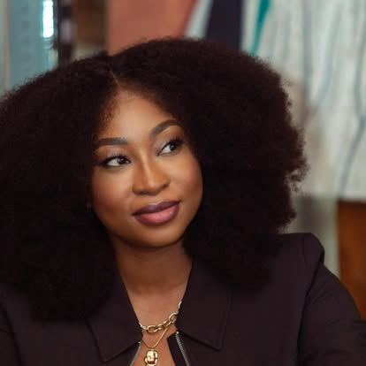
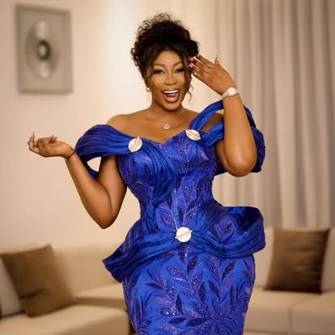
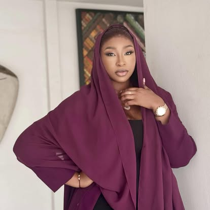
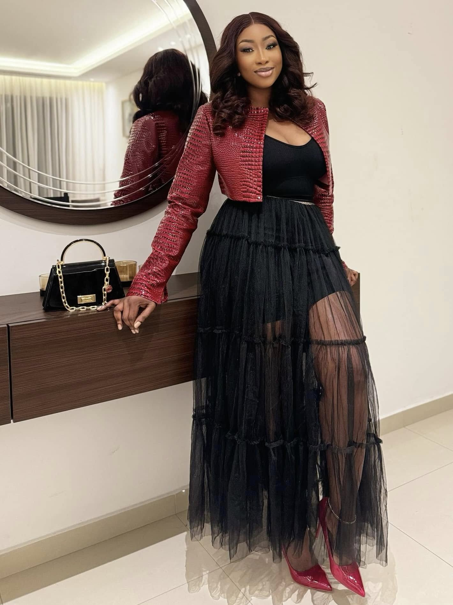
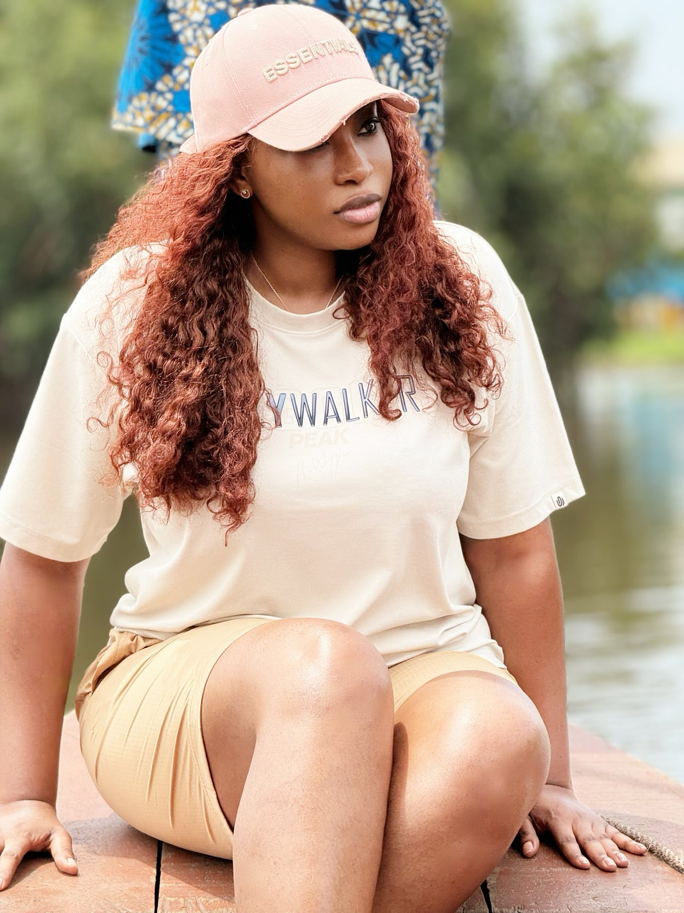

Chère Kadhy,
Je tiens à te partager à quel point tu as marqué ma vie. Je me souviens encore de la première fois où j'ai découvert ton parcours, ton talent et ta personnalité rayonnante. Ce fut une révélation - trouver en toi une source authentique d'inspiration et de force.
C'était pendant l'une des périodes les plus sombres de ma vie, alors que je traversais une dépression profonde. Dans ce brouillard où tout semblait sans espoir, ta lumière a percé. Tes paroles, ton histoire ont été une bouée de sauvetage qui m'a aidé à garder la tête hors de l'eau.
Tu as été la première star que j'ai rencontrée (même si seulement à travers ton travail) qui partage exactement la même religion, les mêmes valeurs, et qui a vécu presque la même enfance que moi. Quand tu parles des moqueries que tu as subies pendant ton enfance, de tes rêves et de tes combats, c'est comme si tu racontais mon propre histoire. Chaque mot résonne en moi, car j'ai traversé ces mêmes épreuves et je continue de les vivre.
Au fil du temps, mon admiration n'a fait que grandir. J'ai appris à t'aimer non seulement pour tes talents, mais pour la personne que tu es : résiliente, passionnée et profondément humaine. Tu es devenue bien plus qu'une idole pour moi ; tu es devenue une lumière qui guide mes propres aspirations.
En ces moments difficiles où tu traverses le deuil de ton père, je tiens à te présenter mes plus sincères condoléances. Sache que mes pensées t'accompagnent dans cette épreuve. La perte d'un parent est une douleur incomparable, et j'admire encore plus ta force de continuer à avancer malgré tout.
Quelles que soient les circonstances, sache que je crois en toi. Même si parfois tu pouvais sentir que le soutien fléchit, retiens ceci : je vis à travers ton parcours. Chacune de tes réalisations est aussi un peu la mienne. Chacun de tes succès me remplit de fierté.
Continue d'avancer, Kadhy. Continue de briller de mille feux. Le chemin peut parfois sembler solitaire, mais sache que je serai toujours là, te suivant des yeux et t'encourageant de tout cœur.
Avec tout mon respect et mon affection,
[Votre prénom]


 








